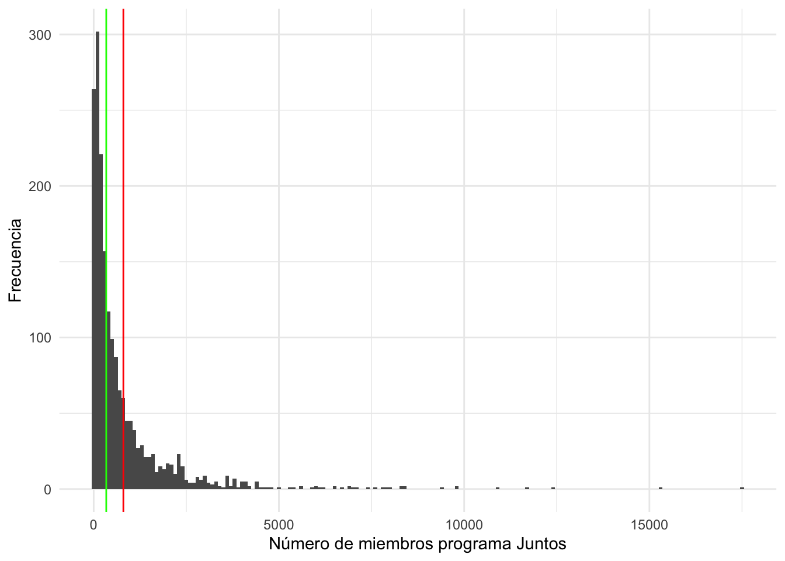
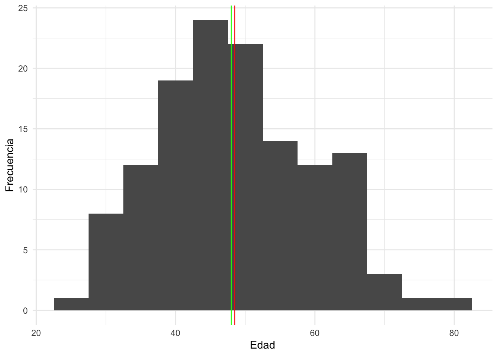
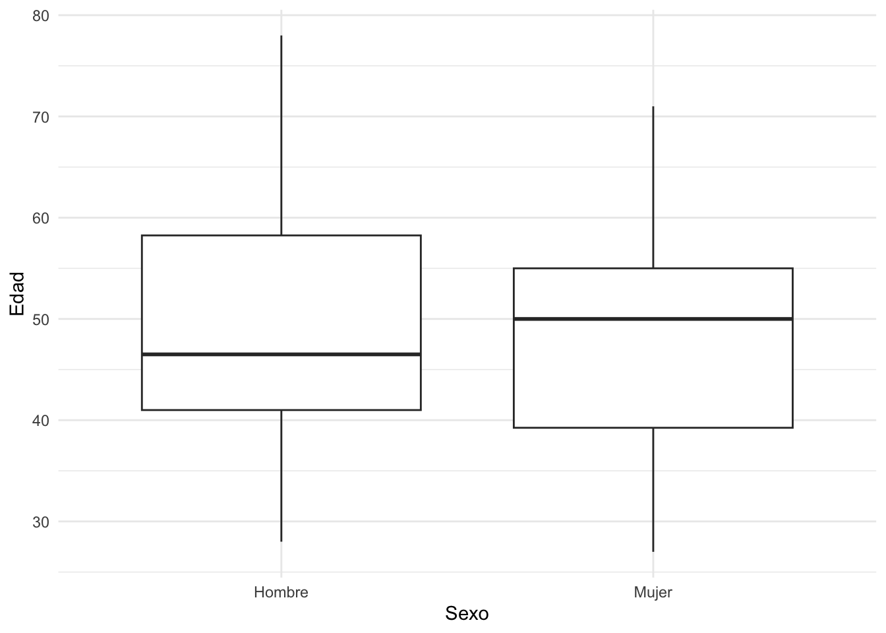
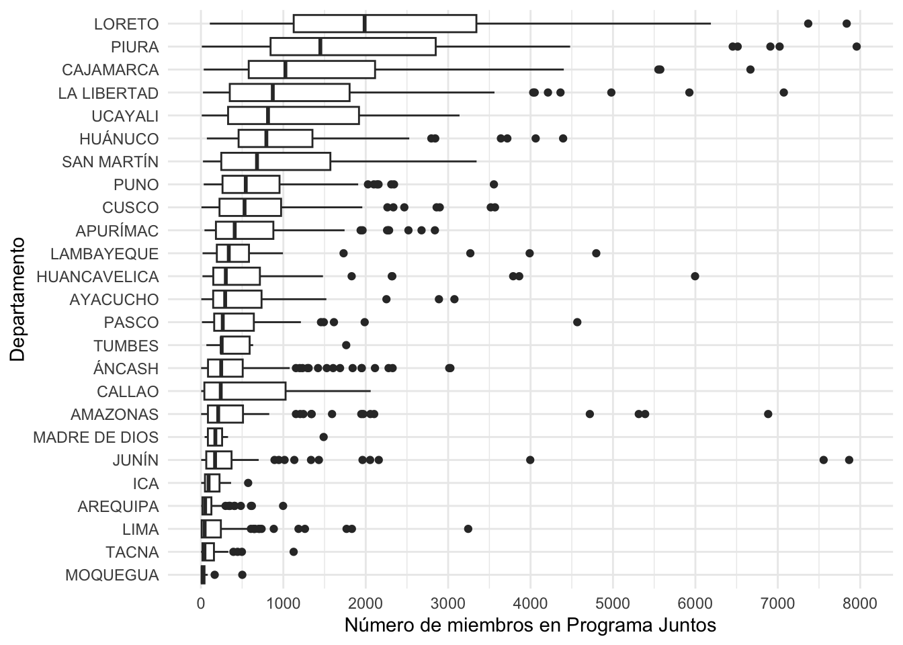
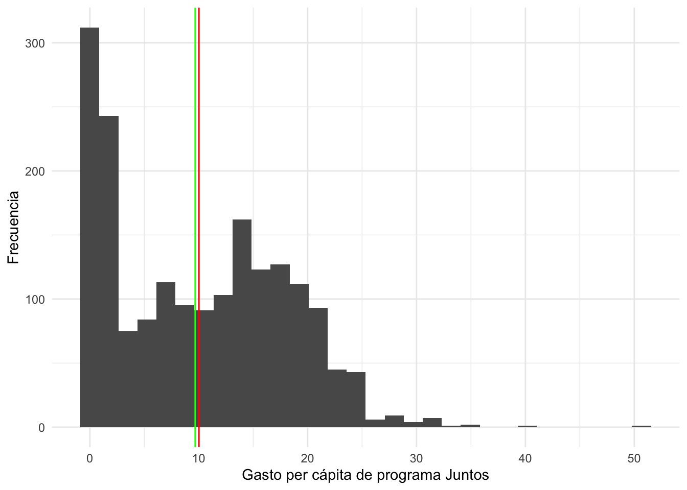
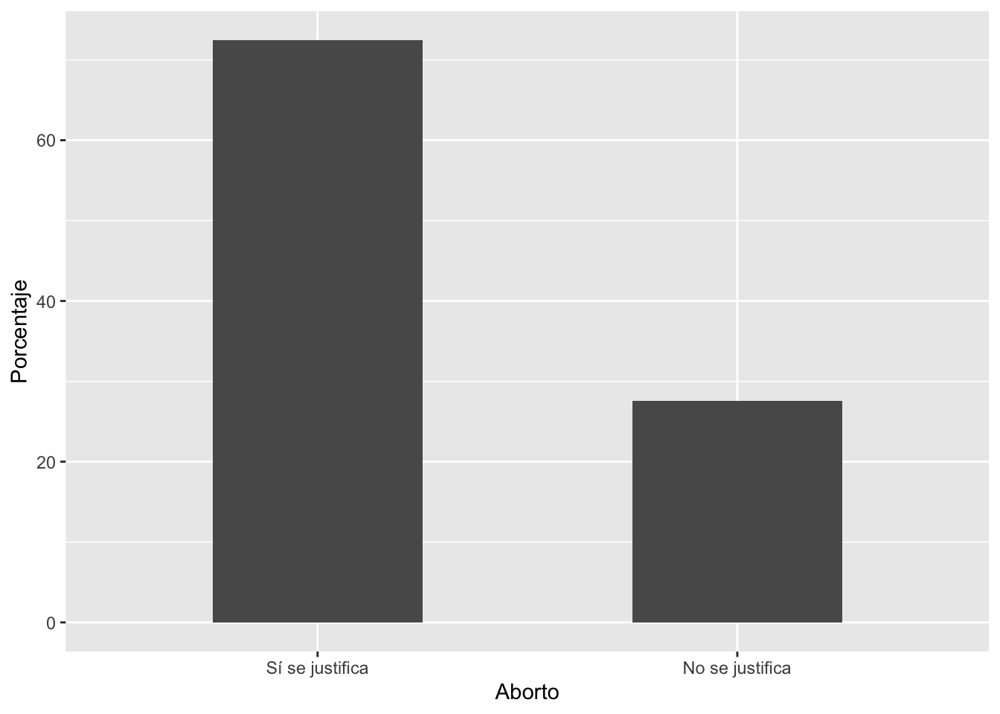
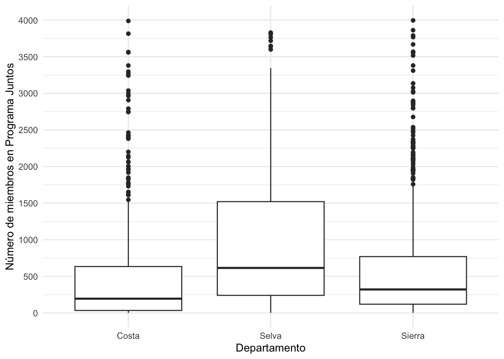
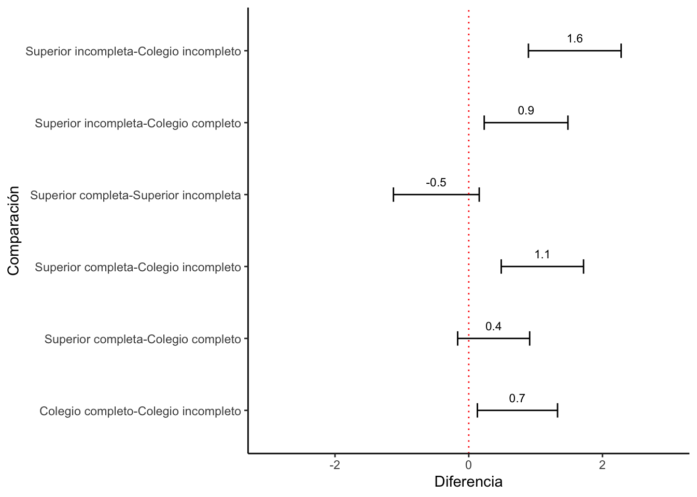

Repaso
Introducción
En este documento se repasará los principales conceptos y procedimientos vistos en la primera mitad del curso.
Ejemplo 1: variable numérica
Base de datos
En esta base usaremos una base de datos de hogares afiliados y abonados al programa Juntos. Como se indica en la página de Datos Abiertos, “Esta información del Programa Juntos, es generada de manera bimestral a nivel de distrito, considerando datos sobre la cantidad de hogares afiliados, cantidad de hogares abonados, número de miembros objetivos y los montos transferidos por los conceptos de afiliación y cumplimiento de corresponsabilidad base en el periodo”.
library(rio)
juntos = import("juntos2023-1.xlsx")Describir una variable numérica
Esta base de datos incluye la variable acerca del número de población objetivo por distrito (variable “miembros”). Queremos tener una idea acerca de la magnitud de este programa. Para esto describimos la variable.
library(tidyverse)
tabla1 = juntos |>
summarise(minimo = min(miembros), media = mean(miembros),
mediana = median(miembros),
maximo = max(miembros), desviacion = sd(miembros),
IQR(miembros))
tabla1## minimo media mediana maximo desviacion IQR(miembros)
## 1 1 801.1761 339.5 17518 1349.603 808.75Se observa que la mediana es de aproximadamente 340 miembros por distrito. Esta es la magnitud de atención estándar de este programa a lo largo del Perú. Sin embargo, la media es de poco más de 800 miembros, lo que indica que existen distritos con una alta carga de miembros, que podrían considerarse atípicos, y que sesgan la media hacia los valores altos.
Graficando una variable numérica
library(ggplot2)
graf1 = ggplot(juntos, aes(x=miembros))+
geom_histogram(binwidth = 100)+
geom_vline(xintercept = 801.2, color = "red")+
geom_vline(xintercept = 339.5, color = "green")+
xlab("Número de miembros programa Juntos") +
ylab("Frecuencia")+
theme_minimal()
graf1
El histograma permite distinguir esta situación más claramente. Vemos que los distritos en el Perú generalmente acumulan menos de 5000 usuarios. Son raros y puntuales los distritos con más usuarios.
graf2 = ggplot(juntos, aes(y=miembros))+
geom_boxplot()+
ylab("Número de miembros de programa Junto")+
scale_y_continuous(limits = c(0, 2000), breaks = seq(0, 2000, 500))
graf2## Warning: Removed 195 rows containing non-finite values
## (`stat_boxplot()`).
Comparando descriptivos
juntos = juntos |>
mutate(departa = as.factor(dpto))tabla2 = juntos |>
group_by(departa) |>
summarise(media = mean(miembros), desviacion = sd(miembros),
mediana = median(miembros))
tabla2## # A tibble: 25 × 4
## departa media desviacion mediana
## <fct> <dbl> <dbl> <dbl>
## 1 AMAZONAS 838. 1700. 214
## 2 ÁNCASH 439. 555. 246
## 3 APURÍMAC 679. 686. 410
## 4 AREQUIPA 107. 151. 51
## 5 AYACUCHO 495. 530. 294
## 6 CAJAMARCA 1614. 1683. 1036
## 7 CALLAO 635. 840. 240.
## 8 CUSCO 724. 707. 530.
## 9 HUANCAVELICA 588. 849. 302
## 10 HUÁNUCO 1078. 919. 794
## # ℹ 15 more rowsComparando descriptivos gráficamente
graf3 = ggplot(tabla2, aes(x=media, y=departa))+
geom_bar(stat="identity", width=0.5)
graf3
graf4 = ggplot(juntos, aes(y=miembros, x=departa))+
geom_boxplot()+
scale_y_continuous(limits = c(0, 8000), breaks = seq(0, 8000, 1000))+
ylab("Número de miembros en Programa Juntos")+
xlab("Departamento")+
theme_minimal()+
coord_flip()
graf4## Warning: Removed 12 rows containing non-finite values
## (`stat_boxplot()`).
juntos = juntos |>
mutate(region = case_when(
dpto=="AMAZONAS"~"Selva",
dpto=="ÁNCASH"~"Sierra",
dpto=="APURÍMAC"~"Sierra",
dpto=="AREQUIPA"~"Sierra",
dpto=="AYACUCHO"~"Sierra",
dpto=="CAJAMARCA"~"Sierra",
dpto=="CUSCO"~"Sierra",
dpto=="CALLAO"~"Costa",
dpto=="HUANCAVELICA"~"Sierra",
dpto=="HUÁNUCO"~"Selva",
dpto=="ICA"~"Costa",
dpto=="JUNÍN"~"Sierra",
dpto=="LA LIBERTAD"~"Costa",
dpto=="LAMBAYEQUE"~"Costa",
dpto=="LIMA"~"Costa",
dpto=="LORETO"~"Selva",
dpto=="MADRE DE DIOS"~"Selva",
dpto=="MOQUEGUA"~"Costa",
dpto=="PASCO"~"Sierra",
dpto=="PIURA"~"Costa",
dpto=="PUNO"~"Sierra",
dpto=="SAN MARTÍN"~"Selva",
dpto=="TACNA"~"Costa",
dpto=="TUMBES"~"Costa",
dpto=="UCAYALI"~"Selva"
)) tabla3 =juntos |>
group_by(region) |>
summarise(media = mean(miembros), desviacion = sd(miembros))
tabla3## # A tibble: 3 × 3
## region media desviacion
## <chr> <dbl> <dbl>
## 1 Costa 859. 1802.
## 2 Selva 1235. 1624.
## 3 Sierra 646. 951.graf5 = ggplot(juntos, aes(y=miembros, x=region))+
geom_boxplot()+
scale_y_continuous(limits = c(0, 4000), breaks = seq(0, 4000, 500))+
ylab("Número de miembros en Programa Juntos")+
xlab("Departamento")+
theme_minimal()
graf5## Warning: Removed 53 rows containing non-finite values
## (`stat_boxplot()`).
Comparando grupos mediante intervalos de confianza
library(lsr)
ciMean(juntos$miembros)## 2.5% 97.5%
## [1,] 739.9344 862.4178miembrosxreg = juntos |>
group_by(region) |>
summarise(Media = mean(miembros, na.rm=T),
min = ciMean(miembros, na.rm=T)[1],
max = ciMean(miembros, na.rm=T)[2]
)
miembrosxreg## # A tibble: 3 × 4
## region Media min max
## <chr> <dbl> <dbl> <dbl>
## 1 Costa 859. 693. 1026.
## 2 Selva 1235. 1059. 1411.
## 3 Sierra 646. 589. 702.graf6 = ggplot(miembrosxreg, aes(x=region, y=Media))+
geom_bar(stat="identity")+
geom_errorbar(aes(ymin=min, ymax=max), width=0.2)+
geom_text(aes(label=paste(round(Media, 1))), vjust=-3.5, size=4)+
xlab("Region") + ylab("Miembros de Programa Juntos")+
ylim(0, 1500)
graf6
Pruebas de significancia
anova1 = aov(juntos$miembros~juntos$region)
summary(anova1)## Df Sum Sq Mean Sq F value Pr(>F)
## juntos$region 2 8.972e+07 44859505 25.27 1.49e-11 ***
## Residuals 1865 3.311e+09 1775275
## ---
## Signif. codes: 0 '***' 0.001 '**' 0.01 '*' 0.05 '.' 0.1 ' ' 1compara = TukeyHSD(anova1)
compara## Tukey multiple comparisons of means
## 95% family-wise confidence level
##
## Fit: aov(formula = juntos$miembros ~ juntos$region)
##
## $`juntos$region`
## diff lwr upr p adj
## Selva-Costa 375.4815 148.9958 601.96726 0.0003072
## Sierra-Costa -213.7764 -388.6877 -38.86515 0.0116757
## Sierra-Selva -589.2580 -785.9113 -392.60459 0.0000000compara.df = as.data.frame(compara[1])
compara.df$compara = rownames(compara.df)graf7 = ggplot(compara.df, aes(x=compara, y=juntos.region.diff))+
geom_errorbar(aes(ymin=juntos.region.lwr, ymax=juntos.region.upr), width=0.2)+
geom_text(aes(label=paste(round(juntos.region.diff, 1))), vjust=-1, size=3)+
xlab("Comparación") + ylab("Diferencia")+
ylim(-800, 700) +
coord_flip() +
geom_hline(yintercept = 0, color = "red", linetype="dotted") +
theme_classic()
graf7
Ejemplo 2: variable categórica
library(rio)
peru = import("PER_2021_LAPOP_AmericasBarometer_v1.2_w.dta")Describir una variable categórica
library(tidyverse)
peru = peru |>
mutate(ing4rec=recode(ing4, '5' = '1', '6' = '1', '7' = '1', .default = '0'))table(peru$ing4)##
## 1 2 3 4 5 6 7
## 291 216 407 546 757 347 458table(peru$ing4rec)##
## 0 1
## 1460 1562peru = peru |>
mutate(ing4rec = factor(ing4rec, labels=c("No", "Sí")))tabla4 = peru |>
filter(ing4rec == "No" | ing4rec == "Sí") |>
count(apoyo = ing4rec, name="Frecuencia") |>
mutate(Porcentaje = (Frecuencia / sum(Frecuencia)*100 ))
tabla4## apoyo Frecuencia Porcentaje
## 1 No 1460 48.31238
## 2 Sí 1562 51.68762Graficar una variable categórica
graf8 = ggplot(tabla4, aes(y=Porcentaje, x=apoyo))+
geom_bar(stat="identity", width=0.5)
graf8
Comparando proporciones
peru = peru |>
mutate(sexo=recode(q1tb, '1' = '1', '2' = '2', '3' = '2')) |>
mutate(sexo = factor(sexo, labels=c("Hombre", "Mujer/Otro")))tabla5 = peru |>
filter(ing4rec == "No" | ing4rec == "Sí") |>
group_by(sexo) |>
count(Apoyo = ing4rec, name="N")|>
mutate(total = sum(N),
Por = N / total * 100,
err = sqrt(Por*(100-Por)/N),
liminf = Por - 1.96*err,
limsup = Por + 1.96*err)
tabla5## # A tibble: 4 × 8
## # Groups: sexo [2]
## sexo Apoyo N total Por err liminf limsup
## <fct> <fct> <int> <int> <dbl> <dbl> <dbl> <dbl>
## 1 Hombre No 807 1610 50.1 1.76 46.7 53.6
## 2 Hombre Sí 803 1610 49.9 1.76 46.4 53.3
## 3 Mujer/Otro No 653 1412 46.2 1.95 42.4 50.1
## 4 Mujer/Otro Sí 759 1412 53.8 1.81 50.2 57.3Comparando proporciones gráficamente
graf9 = ggplot(tabla5, aes(x=sexo, y=Por, fill=Apoyo))+
geom_bar(stat="identity", width=0.5)+
labs(x="Sexo", y="Porcentaje",
caption="Barómetro de las Américas por LAPOP, 2021")+
theme_classic()
graf9
Comparando proporciones con intervalos de confianza
tabla5 = tabla5[-c(1,3),]graf10 = ggplot(tabla5, aes(x=sexo, y=Por))+
geom_bar(stat="identity")+
geom_errorbar(aes(ymin=liminf, ymax=limsup), width=0.2)+
geom_text(aes(label=paste(round(Por, 1))), vjust=-1.5, size=4)+
labs(x="Sexo", y="Porcentaje",
caption="Barómetro de las Américas por LAPOP, 2021")+
theme_classic()
graf10
Prueba de significancia para proporciones
prop.test(c(803, 759), c(1610,1412))##
## 2-sample test for equality of proportions with continuity correction
##
## data: c(803, 759) out of c(1610, 1412)
## X-squared = 4.3759, df = 1, p-value = 0.03645
## alternative hypothesis: two.sided
## 95 percent confidence interval:
## -0.075118749 -0.002436544
## sample estimates:
## prop 1 prop 2
## 0.4987578 0.5375354